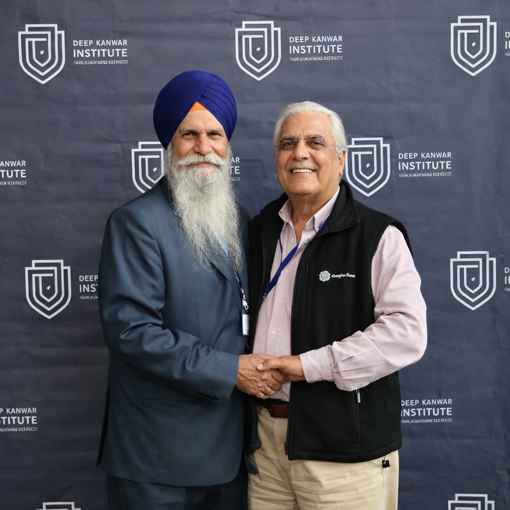
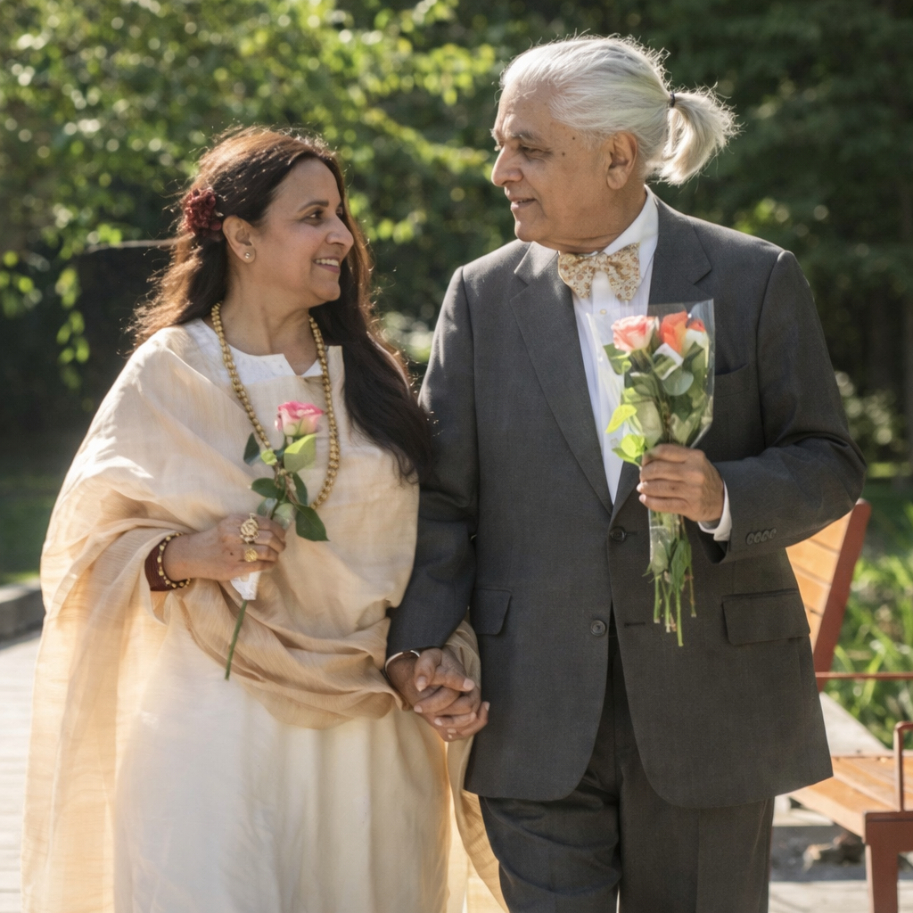

Bhupinder
Singh Liddar
Retired Canadian Diplomat & Media Personality
"Bridging people through diplomacy, media, and global engagement."
Canada • India

Retired Canadian Diplomat & Media Personality
"Bridging people through diplomacy, media, and global engagement."
About
Bhupinder Singh Liddar is a Kenya-born retired Canadian diplomat who has dedicated over four decades to public service, international diplomacy, and media. He began his distinguished career on Parliament Hill in Ottawa in 1977, where he served until 1988.
Known for his eloquence and commitment to intercultural dialogue, Bhupinder has played a pivotal role in shaping Canada's diplomatic narrative — particularly in its relationship with South Asia and the broader Commonwealth nations.
His career spans Parliament Hill, flagship media platforms, and high-level diplomatic posts, culminating in his appointment as Consul General of Canada in Chandigarh, India in 2004, and his role as UNEP Deputy Ambassador — representing Canada on the world environmental stage.
Diplomacy is not merely the art of negotiation — it is the art of listening, understanding, and building lasting bridges between cultures and peoples.

Career Journey
A timeline of milestones that shaped a remarkable diplomatic career

Personal
Behind decades of diplomacy stands a personal foundation shaped by family, continuity, and a lifelong commitment to meaningful connection.
Bhupinder Singh Liddar is married to Vanita Rani.
Beyond the public record of service, this section reflects the human side of a distinguished journey: one rooted in relationships, presence, and the values that endure beyond official titles.
Get In Touch
Whether you wish to discuss international affairs, media collaboration, speaking engagements, or simply share a conversation about diplomacy and global relations, Bhupinder warmly welcomes your message.